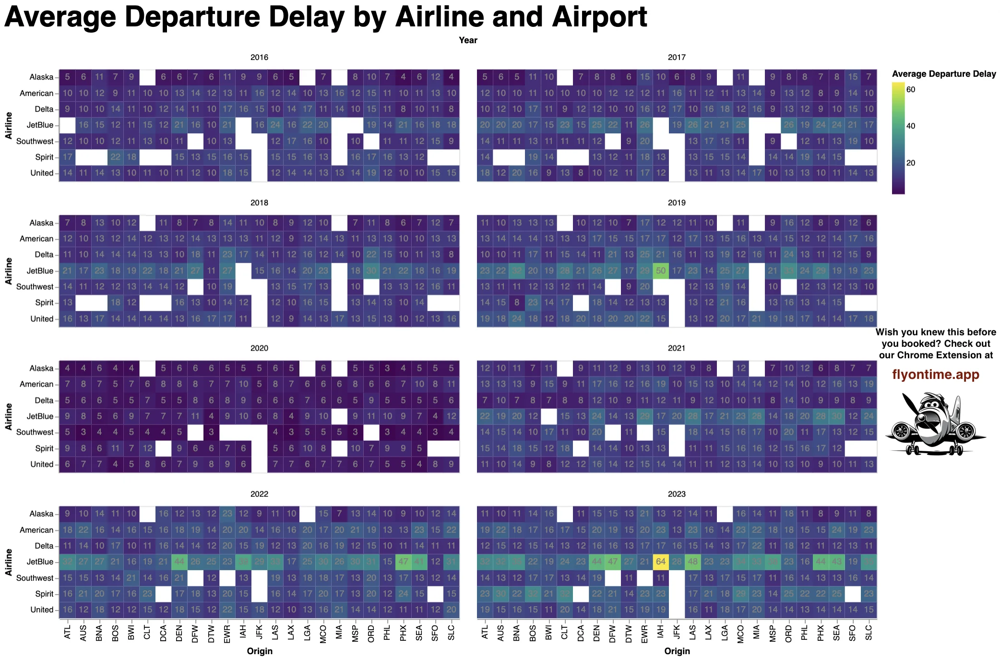

Airports (nominal), Departure hour (interval), Probability (ratio)
Visual Encoding/Idiom
Departure hour: position on vertical axis.
Airports: position on horizontal axis, properly reordered by probabilities to show the trend.
Probability: color from dark blue to bright yellow in continuous space, with limitations in low-level query actions. You can compare but can not identify the probability value.
Improvements
Divide the probability range and Discretize the color space, we can have a rough probability ranage value when referering to color.
Add specific probabilities number in each rect box for identifying action.
Give the most effective channel like position to the probabilities.

Data Abstraction
Airports (nominal), Airline (nominal), Delay in Minutes (ratio), year (interval)
Visual Encoding/Idiom
Airports and Airline: position on horizontal and vertical axes.
Delay in Minutes: Color in continuous spectrum.
The delay minutes are explicitly displayed, easy for identify and compare.
Violate the effectiveness of Salience: some cells of missing data are colored in white which are much salient than other cells.
Year: 2D Spatial Position (two axes).
Channel Redundancy: The year can be represented on a 1-D axis, but it is situated within a 2-D coordinate system.
Improvements
Use "nan" to represent cells of missing data, color them with black color to make them less salient.
Because year is of interval data scale, we can 1D axis to better model the trend.
Use animation to show the change of delay over the years.